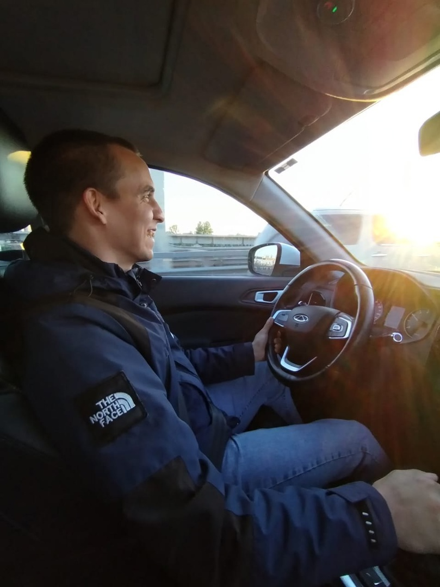
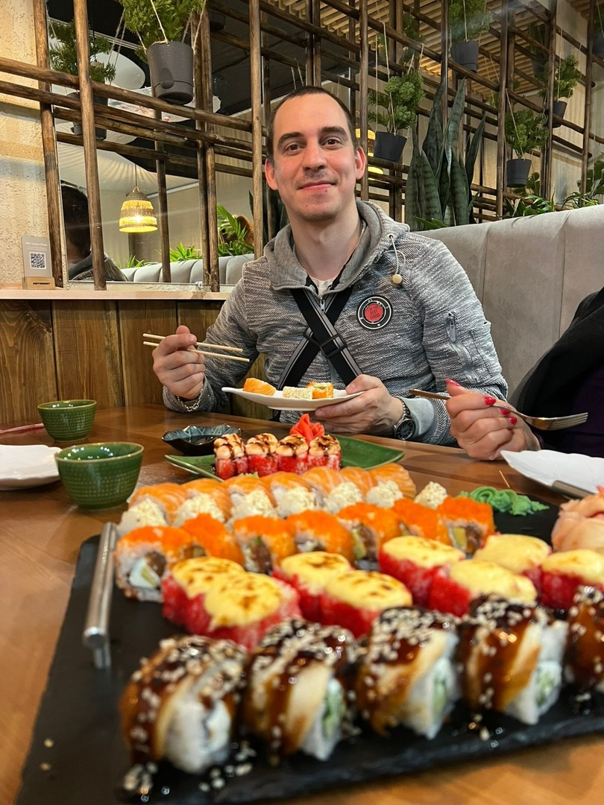
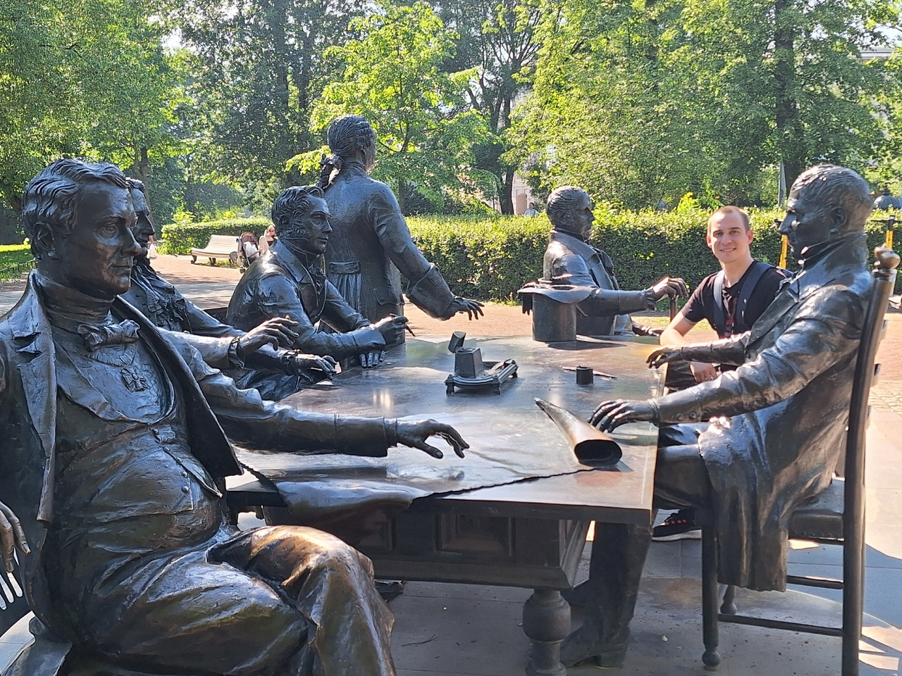

На курс часто приходят ребята, кто умеет что-то делать, но, при этом, даже не верят, что на этом можно зарабатывать. Мой ученик Михаил Половцев из небольшого городка Заречный поделился своими успехами. Раньше не хотел развиваться, не видел возможности, что можно зарабатывать на электрике, подрабатывал в такси. Но решил попробовать и пришел на курс.
Почти сразу, еще в процессе обучения увеличил доход в 5 раз, выстроилась очередь на 3 недели вперед.
Вот, что мне рассказал Михаил:
— С начала года у меня очередь на 3 недели держалась стабильно, вот только сейчас начала спадать и на вторую половину декабря и первую неделю января вообще никого записывать не буду. Работа, это конечно хорошо, но отдыхать тоже надо, а то я чувствую, что выгорать начал.
Да я даже тот курс, который купил, и то до конца не прошел процентов на 50 наверно. Забросил, потому что клиентов куча стала и обучаться стало просто некогда))
— Слушай, крутые результаты, молодец! Поговорим подробнее?
— Да я то не против, только есть нюансы. Я не знаю, сколько клиентов ко мне приходит из Вк. Ориентировочно 50%. А так как район у нас маленький, все друг друга знают, то около 30% идет с сарафана и 20% с авито. Есть клиенты, которые повторно обращаются и не раз. Есть один, который минимум раз в месяц зовет на небольшой заказ. 30-40 минут работы и 2-3 тысячи.
Но дал основу и толчок для развития именно курс ВК бабло и твое сопровождение.
— Расскажи, что было до курса, какой средний доход был в месяц? Сколько клиентов?
— До курса клиентов почти не было. Дело в том, что я не хотел развиваться, почему-то не видел в своей профессии денежную нишу. Мне проще было в выходные подработать в такси, чем начать что-то делать. Если ко мне кто-то и обращался за помощью, как электрика, то это было может пару раз в месяц, и это были знакомые/знакомые знакомых, по какой-нибудь мелочевке.
Доход был около 5000р в месяц.
Я сейчас поднял свои архивы и увидел кое-что. В феврале я наткнулся на твою рекламу и решился написать. Прошел бесплатный курс (приветственный пост, оформление страницы и тд) уже после этого курса я заработал за месяц в 2 раза больше.
Господи, какие же это копейки были, по сравнению с тем, что сейчас)) В марте-апреле я купил курс “Из ВК бабло в твое ремесло”, прошёл половину и уже в мае вышел на доход в 25 тысяч, это немного превысило мой доход на "нормальной" работе. Июнь, июль были почему-то упадочные, но зато в августе уже 45 тысяч.
— Какие сложности были во время обучения на курсе? Насколько сложно было учиться? За сколько прошел обучение?
— Сложностей особо не возникало. Бывало, не знал с чего начать, например приветственный пост. Но твои подсказки мне очень помогли. Так-то я сообразительный и с подсказками быстро делал то, что нужно. Учиться было не сложно. Хоть у меня и был тариф “Всё сам”, я всегда мог обратиться за помощью. Но, обращался может всего пару раз, так как написано, описано всё доступным языком. Разжевано, положено в рот и надавлено, чтобы в желудок проскочило))
Если брать начало, что прям сел и начал, то половину курса прошел недели за 2-3, а если считать от дня, когда купил курс, то месяца полтора, так как начал изучать не сразу.
— Какие сейчас действия делаешь для привлечения клиентов? Как часто пишешь посты? Запускаешь ли рекламу?
— Для привлечения клиентов почти ничего не делаю. С того момента, как я сделал группу, оформил её и личную страницу, ничего не менял, всё работает уже почти 5 лет.
Есть объявление на Авито.
Посты пишу примерно раз в 2 недели, бывает реже, бывает чаще. Не вижу смысла выкладывать однотипную работу, выкладываю что-то по настоящему интересное, когда сталкиваюсь с интересной работой, или если работа была объемная.
Случайно понял, что при написании постов нужно описывать частичку своей жизни, своих эмоций и переживаний, людям нравится это читать, но как совместить это с электрикой, ума не приложу)
Рекламу не запускаю и даже не знаю, как это делать, пропустил всю информацию, которая была. Да мне, в принципе, и без рекламы работы хватает.

— А можешь поделиться, как изменилась жизнь, когда увеличился доход? Может что-то купил себе? Съездил в путешествие? Что-то смог сделать, чего раньше не мог позволить себе)
— О, это непередаваемое чувство, когда больше не считаешь каждую копейку, не ищешь у кого бы занять в случае форс мажора и не проводишь выходные в такси, ради полутора тысяч за смену.
В 2019 году, после прохождения курса и осознания того, что я могу нормально зарабатывать, я позволил себе взять подержанный автомобиль 2013 года выпуска в кредит.
В 21 году мне попался отличный заказ, я его выполнил за день и заработал 45 тысяч. Через неделю посадил семью в машину и поехал на Черное море. Исполнил свою многолетнюю мечту)
В этом году я купил машину супруге, содержу 2 машины, сделал ремонт в 3-х комнатной квартире. Особо не задумываюсь при покупке бытовой техники. Практически всё, что покупаю, новое. В планах взять дом в ипотеку.
Раньше я себе всего не мог позволить а сейчас могу позволить очень многое. Мне нравится заправляться до полного бака, отдыхать в местном кафе, покупать продукты, оплачивать коммуналку (и много что еще). И при этом не задумываться о стоимости и об остатке на счете.
Блин, это реально свобода. Есть фраза: не в деньгах счастье. Согласен, счастье не в них, но намного проще быть счастливым с деньгами, чем без них)

— Все, остался только вопрос, сколько сейчас зарабатываешь? Сколько в среднем в месяц? Сколько клиентов? А вот примерно сколько за год было прошедший заработано?
— У меня есть основная работа, которая мне не в тягость и которая приносит хороший доход. Совместно с заказами, общий доход получается достаточно хороший. Но, так как у меня очередь из клиентов на 3 недели вперед, учитывая мой график 3/2 и то, что я заказы выполняю по выходным, есть перспектива уволиться с работы и оставить очередь на заказы на прежнем уровне, так как процентов 30 потенциальных клиентов не могут ждать 3 недели и просто заканчивают разговор.
Средний доход от выполнения заказов 60-70 тысяч. В этом месяце уже 85, хотя он еще не закончился. Точно, сколько клиентов было за этот месяц сказать не могу, так как чертов трелло заблокировали, но минимум 12, по одному на каждый выходной. На самом деле их больше, так как бывает, что несколько мелких заказов я делаю в один день. Я думаю, что более точное число это 20-25. За прошедший неполный год только на заказах было заработано 540 тысяч. Это прям точная цифра.
— У тебя офигенные результаты. Ты говорил, что у тебя несколько источников дохода, но именно курс ВК-бабло помог тебе понять, что делать, и как-то развиться. Можешь рассказать подробнее, что ты ценного такого извлек?
— Ценность курса несомненно в его содержании, но, я считаю, самую большую ценность представляет создатель этого курса)
Мне круто повезло, что я наткнулся на тебя тогда, когда не было такой большой движухи, вы сами только начали развиваться и у вас была возможность лично дать обратную связь каждому. Купив курс, я не сразу начал его использовать, но постоянно получал волшебный пендель.
Эти пендели и послужили мне хорошим мотиватором. Сначала вы пинали меня, чтобы я купил курс, мол, давай, покупай, цена фигня, дадим рассрочку, потом благодарить будешь. Я купил. После этого началось: ты начал обучаться? Сколько прошел? Что непонятно? Давай, давай, изучай, развивайся, что толку, что ты курс купил и на полку его положил? Тебе денег хватает? Ах, нет? Дак какого хрена ты ещё не начал курс изучать? И все в таком стиле.
Другие бы просто курс продали и хрен с ним, главное бабки заплатили. А тут такая колоссальная подпинка, поддержка и обратная связь!
— Да сейчас мы тоже так делаем, только уже более мощно - и команда расширилась, и кураторы есть, и те, кто сами учатся, тоже получают по голове))) Спасибо большое за такое интервью, я очень рада, что у тебя такой результат, что ты так круто вырос и сейчас имеешь то, что имеешь. И это с не самой легкой нишей. Я очень рада, что ты когда-то увидел мою рекламу)

— Не за что, я даже не ожидал, что так развернуто получится ответить)) Я тоже очень рад нашей встрече и нашему сотрудничеству))
Еще скажу, что только в этом году я серьезно задумался о том, чтобы совсем уйти из найма. Более того, создать возможность для найма. Есть мысли брать студентов выпускного курса колледжа на практическое обучение, поначалу платить им символическую сумму за “принеси-подай”, а потом, когда наберутся опыта, сколотить команду, брать кучу заказов, распределять ребят по объектам, а самому только ходить контролировать и грести свой процент.
Ну и впоследствии, чтобы все было официально, открыть ИП, создать свою фирму.